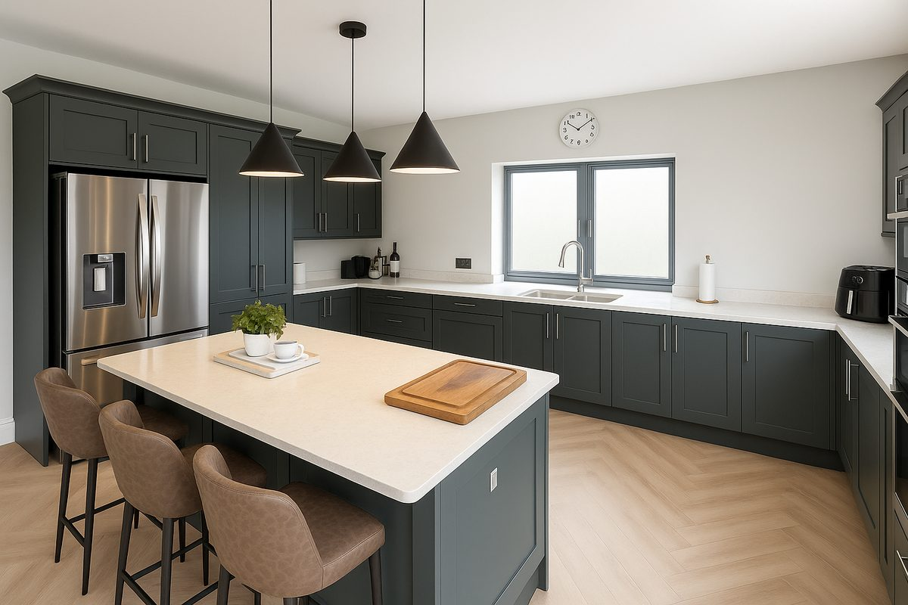

Bespoke kitchens & fitted joinery · County Fermanagh
View2Build designs, manufactures and installs bespoke kitchens, fitted wardrobes and joinery across Co. Fermanagh, from Enniskillen out to the lakeland villages. With our workshop just over the border in Pettigo, Fermanagh is right on our doorstep.
Fermanagh is full of characterful lakeland cottages, rural farmhouses and extensions where an off-the-shelf kitchen simply won't fit. We machine every cabinet to your room, so awkward walls, sloping ceilings and tight corners are designed for, not worked around.
Towns we regularly work in across County Fermanagh include Enniskillen, Lisnaskea, Irvinestown, Ballinamallard, Kesh, Derrygonnelly and Lisbellaw.
Everything is drawn in 3D so you see it before it's built, and cut on an industrial CNC for a precise, consistent finish. No showroom, no middleman. We return a detailed quote within 3 to 5 working days.
Tell us about your space and we'll come back within 3 to 5 working days. Bespoke kitchens, fitted wardrobes and joinery, designed, manufactured and installed.
AREAS WE COVER: Omagh & Tyrone · Fermanagh · Derry / Londonderry · Donegal